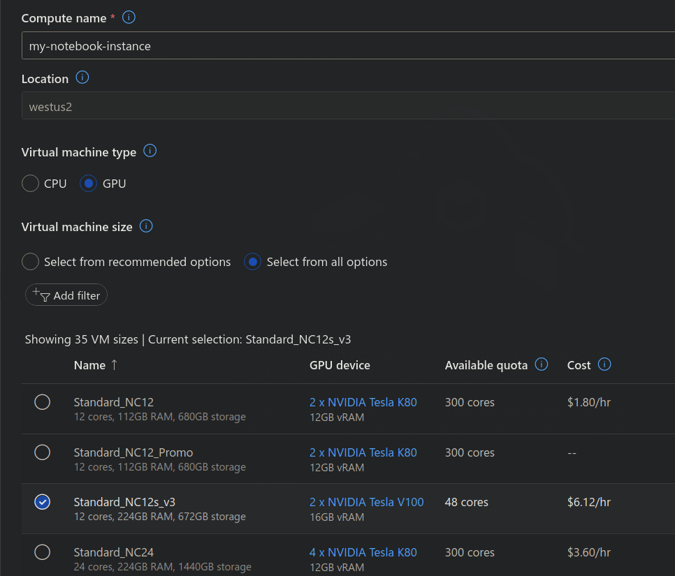
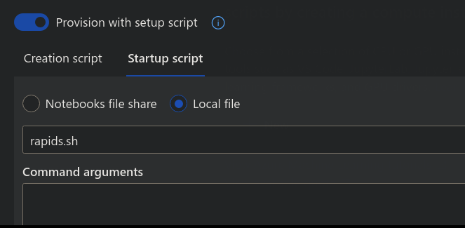

Azure Machine Learning (Azure ML)#
RAPIDS can be deployed at scale using Azure Machine Learning Service and easily scales up to any size needed. You can configure your environment on a local computer, Azure Machine Learning notebook service via compute instance or cluster.
Pre-requisites#
Use existing or create new Azure Machine Learning workspace through the Azure portal, Azure ML Python SDK, Azure CLI or Azure Resource Manager templates.
Follow these steps to get started:
1. Create. Create your Azure Resource Group.
2. Workspace. Within the Resource Group, create an Azure Machine Learning service Workspace.
3. Config. Within the Workspace, download the config.json file and verify that subscription_id, resource_group, and workspace_name are set correctly for your environment. You will load the details from this config file to initialize a workspace object for running ML training jobs from within your notebook.
4. Quota. Within your Workspace, check your Usage + Quota to ensure you have enough quota within your region to launch your desired cluster size.
Azure ML Compute instance#
Azure’s ML Compute instances are a fully managed and secure development environment that can also serve as compute target for ML training and inferencing purposes. It comes with integrated Jupyter notebook server, JupyterLab, AzureML Python SDK and other tools.
Select your instance#
Sign in to Azure Machine Learning Studio and navigate to your workspace. On the left side, select Compute > + New and choose a RAPIDS compatible GPU (NVIDIA Pascal or greater with compute capability 6.0+) as the SageMaker Notebook instance type (e.g., Standard_NC12s_v3)

Provision RAPIDS setup script#
Create a new “startup script” (via the ‘Advanced Settings’ dropdown). You can upload the script from your Notebooks files or local computer.
Optional to enable SSH access to your compute (if needed)

See the Azure ML documentation for more details on how to create the setup script but it should resemble:
#!/bin/bash sudo -u azureuser -i <<'EOF' conda create -y -n rapids -c rapidsai-nightly -c conda-forge -c nvidia rapids=23.04 python=3.10 cudatoolkit=11.5 ipykernel conda activate rapids # optionally install AutoGluon for AutoML GPU demo # python -m pip install --pre autogluon python -m ipykernel install --user --name rapids echo "kernel install completed" EOF
Launch the instance.
Select the RAPIDS environment#
Once your Notebook Instance is Running select “JupyterLab”
Then in JupyterLab select the rapids kernel when working with a new notebook